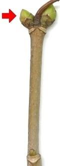

Die graue Borke löst sich in Schuppen ab. Wo sie abfallen, bleiben rotbraune Flecken zurück.

Die Knospen an den Winterzweigen sind etwa 1cm groß und grün.
Die graue Borke löst sich in Schuppen ab. Wo sie abfallen, bleiben rotbraune Flecken zurück. |  Die Knospen an den Winterzweigen sind etwa 1cm groß und grün. |